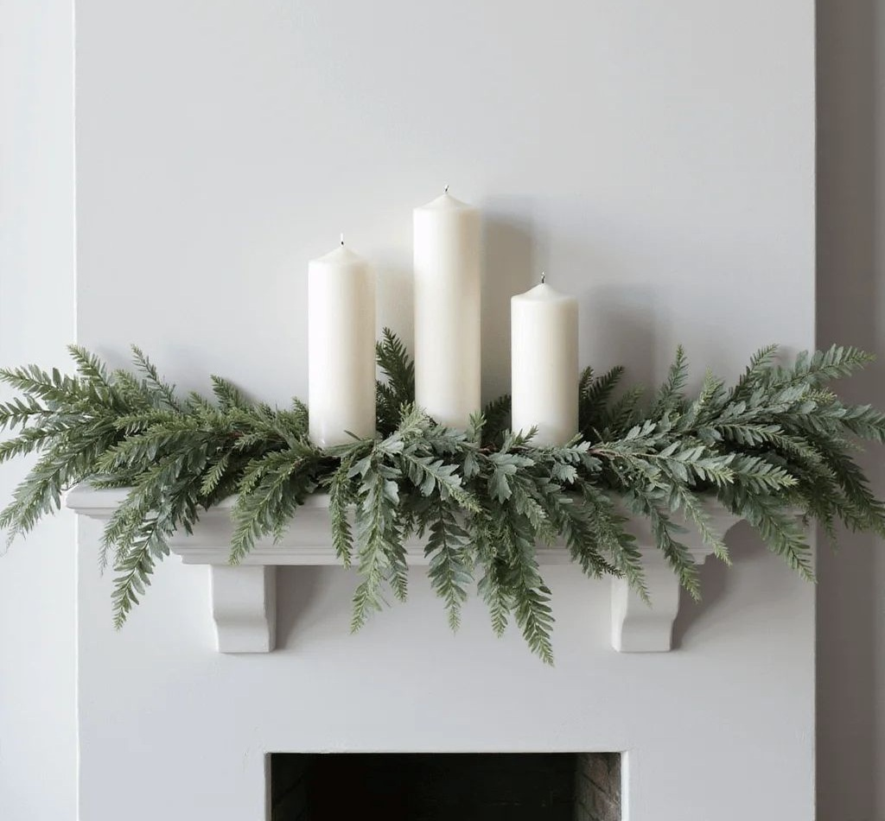

The Geometry of Three: Why Odd Numbers Bring a Room to Life
Spatial rhythm, layout balance, and why grouping decor in threes creates natural movement and visual harmony in your home.
Spatial design, furniture, and living environments shaped with intention.
The spaces we inhabit shape how we live, work, and rest. Within the Craft pillar, Space & Decor is dedicated to exploring how room layouts, furniture selection, and physical details bridge our environments together—connecting the kitchen table, the garden view, and the creative workshop into a unified living rhythm.